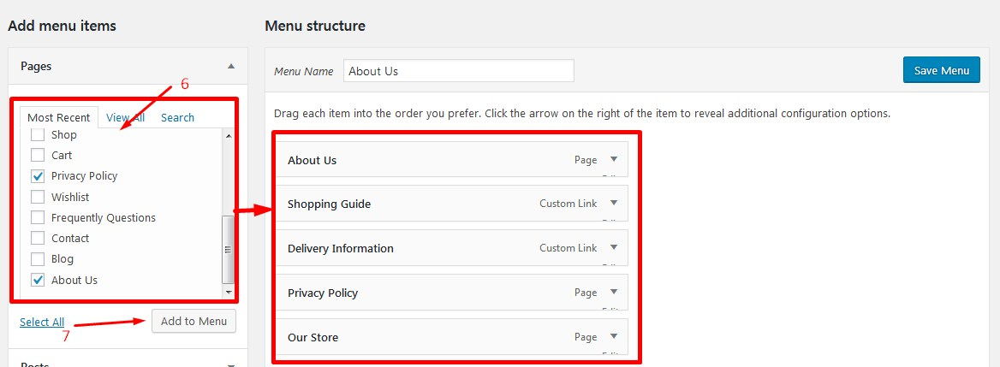
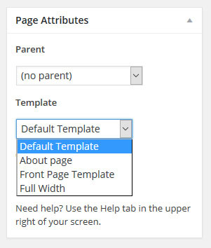

Autima responsive theme documentation by RoadThemes
Thank you for purchasing my theme. If you have any questions that are beyond the scope of this help file, please feel free to email via my user page contact form here. Thanks so much!
To install this theme you must have a working version of WordPress already installed. You should ALWAYS be running the latest version of WordPress anyway; otherwise you put your whole site at risk for potential threats in case using an outdated version of WordPress.
If you need help installing WordPress, follow the instructions in WordPress Codex.
Installation
How to install theme
Once you've downloaded the installation file on ThemeForest, extract it and locate a file called autima.zip. You can install the theme by using one of two installation methods:
WordPress upload - This is probably the simplest way for most users. Here are the steps you need to take:
Login to WordPress admin
Go to Dashboard> Appearance > Themes > Add New > Upload Theme
Click on "Choose File" and select autima.zip
Click on "Install Now"
FTP upload - If you wish to install via FTP, here are the steps you need to take:
Using FTP client, login to the server where your WordPress website is hosted
Using FTP client, navigate to the /wp-content/themes/ directory under your WordPress website's root directory
Using FTP client, upload the Theme directory to themes directory on remote server
Once installation is complete, your Theme theme will be ready to use. You should now see "autima" appears in the WordPress themes manager panel.
Note: If you don't want to lose changes after a theme update, we recommend that you install and activate a child theme.
How to install plugins
The installation of plugins will be required once after the theme activation.
***Install and Activate them. In case if automatic plugin installation fails (as a rule it is because of your server settings), you can install them manually via your Dashboard: Plugins > Add New > Upload Plugin > Browse plugins archives. Or via FTP, by uploading and extracting the plugin zip files into wp-content/plugins folder.
- You can find the zip files for plugin installation in the theme folder autima/plugins.
Watch the guide above to see in details.
***Automatic plugin installation
***Manual plugin installation
Demo Content
Guide Video
Import data demo
We can import content for pages, posts, menu, projects, contact form, testimonials... like our demo. To import our demo content follow the steps below:
Install and activate required and recommended plugins before you proceed.
Click Import Roadthemes => Click on IMPORT DEMO => Wait some minutes => See The data have imported succesfully => Next, click Import Roadthemes => See the demo with ACTIVATED => Successful
To install other demo, please click Import Roadthemes -> IMPORT DEMO at the demo you want. => See The data have imported succesfully -> Successful
To install demo which you have imported but now not "ACTIVATED", please click Import Roadthemes -> ACTIVATE at that demo.
Import Revolution Slider
After importing demo data, slider doesn't show. You need to create/import. We have some sample slider in the slider-sample folder in the package.
- Login to your WordPress dashboard, navigate to Slider Revolution - Modules - Manual Import
- You can drag and drop sample slider or choose Click to Choose to choose sample slider in the slider-sample folder in the package
- You can see sample slider you've imported at:
Import Widgets
- After importing demo content, if Shop page doesn't show sidebar, please import widgets.
- To create widgets for this theme quickly, we use a tool to import all widgets from exported files in "sample-data/exported_files" folder.
- Login to your WordPress dashboard, navigate to Tools - Widget Importer & Exporter
- Click on "Browse..." or "Choose File" button then select "widgets.wie", click on "Import Widgets" to finish.
- After importing widgets, if you need change widgets, go to Apperances - Widgets
Updates
1. How to update your theme
*** Manual Update via FTP
You can update your theme manually by performing the following steps:
Before update, please backup your site
Download the latest theme zip file from ThemeForest
Extract autima_updated.zip and open autima folder
Upload all files in autima folder override to: wp-content\themes\your_theme
***Important note: Please note that all changes made directly within theme files (additional PHP coding and theme modifications) will be lost upon theme update. That is why we recommend using a child theme when making changes in theme files, in order to avoid losing these changes or having to re-do them each time you update your theme.
Theme General Settings
1. Wordpress General Settings
Go to Dashboard> Settings > General
If the url is not correct, Go to Dashboard > Settings > Permalink and Click Save
2. Change site title, tagline, site icon
To change site title, tagline, site icon, you need to do like steps below:
- Go to Dashboard - Appearance - Customize - Site Identity: Change title, tagline, icon of the site.
3. Set a page as home page and posts page (blogs)
To set a page as home page and posts page (blogs):
****Example: To set Home1 to be your homepage:
Login Dashboard > Settings > Reading :
After that, you must go to Dashboard> Pages > All Pages > Home page (you have set above, Example: Home shop 1, Home shop 2 ...) and set Template as Front Page Template:
***Important note: Please note that Template Demo (2, 3, ...) are only for our demo. If you choose Template Demo, you cannot change Theme Options and Header, Footer layouts.
4. Setting WooCommerce Pages
Login Dashboard > WooCommerce > Settings :
- Tab Products: setting Shop page.
- Tab Advanced: setting other pages.
- Setting Wishlist page: Go to Dashboard > YITH > Wishlist > Settings :
You can access Theme Options from the WordPress admin panel. The settings found here are applied globally and will affect all pages of the site.
General
This section allows you to set up general settings for your site. We can change body background, content background and show/hide the back to top button.
Colors
This is where you can change colors for your website. We can change the primary color, sale label color, link color, text selected color and background.
Header
Note: The menu ID may changed, so you need to update menu in Pages, Header, Footer (WPBakery Page Builder editor).
This section allows you to set up the header area. The first choice to change the header layout, header layout in mobile. Change the header text color and link color.
Sticky header:
We can turn on or off the sticky header. Change background for the sticky header, it supports transparent background color. You can change header sticky layout.
Top bar:
In this area, we can change text color and link color for top bar.
Main Menu:
We can change mobile menu label. The sub menu background in desktop view.
Categories Menu:
We can change categories menu label. The sub categories menu background, number of items are applied for the categories menu (categories menu) in desktop view.
Footer
Note: The menu ID may changed, so you need to update menu in Pages, Header, Footer (WPBakery Page Builder editor).
This area allow you to change the footer layout, footer background, footer text color, footer link color.
Social Icons:
Enter your own social links.
Fonts
In this area, we can change font for text, heading, menu, price... There are some options to select for each font like font family, back up font family, font weight and style, font size, line height, color. We use Google Fonts. You can use default options or change any font like you want.
If we want to use default options, click on "Reset Section" button.
Image Slider
This section allows you to upload images and links. Click on Add Slide to add more images.
Brand Logos
This section allows you to upload brands logo and configure the options for the brands slider. Click on Add Slide to add more logos.
Sidebar
This section allows you to change position of sidebars to left or right side in inner Pages (Default Page Templates). Products and Blogs sidebars are in other sections. Go to edit page/post to select custom sidebar.
Product
This section allows you to change the layout for the shop page and change position of sidebar in shop page. We can change how the products appear in grid view or list view. We have products per page, product columns and secondary image.
Product page:
This area allows you to change options for the product page in product page.
Quick View:
This area allows you to change the text link on the quick view window.
Blogs
This section allows you to change the text on header of blog page "Blog", select blog layout, change read more text, change position of sidebar in blog page.
Testimonials
This area allows you to change options for the testimonials carousel on home page.
Error 404 page
This section allows you to upload image, background for the error 404 page.
Less Compiler
This section allows you to turn on/off the less compiler. In the theme, we used .less files in the "less" folder to generate .css files. Turn off the compiler after you finished your website.
Header
Header Layout
- Go to Theme Options - Header - Header Layout to select your header layout.
- Go to Theme Options - Header - Header Mobile Layout to select your header layout on Mobile.
Setting Header
- Go to WPBakery Page Builder > Templates > Header1 (Header2/ Header3/ Header4)(The header you are using) -> Edit:
***Change mobile header : In WPBakery Page Builder=>Templates=>HeaderMobile -> Edit
How to change Your Logo, sticky logo, logo in mobile
***Change Logo: Now let's add a logo. In WPBakery Page Builder > Templates > Header1 (Header2/ Header3/ Header4) (the header you are using) : you click to Logo shortcode to edit, then select image from library or upload new logo. Remember to save. You should now have a visible logo in your header area.
***Change Sticky Logo: In WPBakery Page Builder > Templates > HeaderSticky -> you click to Logo shortcode to edit, then select image from library or upload new logo. Remember to save. You should now have a sticky logo in your header area when scrolling page.
***Change Logo in mobile: In WPBakery Page Builder > Templates > HeaderMobile -> you click to Logo shortcode to edit, then select image from library or upload new logo. Remember to save. You should now have a logo in your header area in mobile.
Sticky Header
- Go to Theme Options - Header - Sticky Header to select your sticky header layout, enable using sticky header, change background, text color, link color of sticky header.
- Change logo and content of sticky header : Go to WPBakery Page Builder > Templates > HeaderSticky -> Edit
Mobile Header
- Go to Theme Options - Header - Header Mobile Layout to select your header mobile layout.
- Change your logo and content of header on mobile : Go to WPBakery Page Builder > Templates > HeaderMobile (The mobile header you are using) -> Edit. Remember to save when finish changing.
Config menus on Header
After installing theme, to show My Account on Header, you need to config and save menus:
Go to Dashboard > WPBakery Page Builder > Templates > Header1(Header2/ Header3/ Header4) (the header you are using)
At WP Custom Menu -> Edit -> At Menu:
To like our demo set: Select Top Links menu
Footer
Footer Layout
- Go to Theme Options - Footer - Footer Layout to select your footer layout.
How to change logo on Footer
***Change Logo: In WPBakery Page Builder > Templates > Footer1 (the footer you are using) : you click to Single Image of Logo to edit, then select image from library or upload new logo. Remember to save. You should now have a visible logo in your footer area.
Editing Footer
*** Footer contains Logo, copyrights, menus.
- To edit Footer: Go to WPBakery Page Builder > Templates > Footer1 to edit.
Config menus on Footer
After installing theme, to show links above on Footer, you need to config and save menu:
Go to Dashboard > WPBakery Page Builder > Templates > Footer1
At WP Custom Menu of titles -> Edit -> At Menu: Select menu you want to show -> Save
To like our demo set:
- With (1): Select Information menu
- With (2): Select My Account (footer) menu
Menus
1. Create new menu
Following these steps to create a menu.
Go to Dashboard > Appearance > Menus
Click on Create a new menu -> Enter a name for your menu, and then click on Create Menu
Select items from the left meta boxes and click Add to Menu

On the right, feel free to drag and drop menu items to organize them
When you’re done moving menu items, check a menu location at the bottom of the page
Click Save Menu
2. Config locations of menus
- To config locations of menus like demo, please follow these steps:
Go to Appearance > Menus > Manage Locations and choose location for each menu:
3. Config Horizontal Menu to show columns like demo
Go to Dashboard > Appearance > Menus
Select Edit Menus : At Select a menu to edit : Choose Horizontal Menu (Primary Menu, Sticky Menu, Mobile Menu ...) -> Select
Select item you want to set columns. Ex, here is Shop : At Menu Structure : Set Multicolumn Submenu and Submenu Columns (Not For Standard Drops) : choose number of columns
4. How to change links on Horizontal Menu
To change links of items on menus:
Appearance > Menus
Select Edit Menus : At Select a menu to edit : Choose Horizontal Menu (Primary Menu, Sticky Menu, Mobile Menu ...) -> Select
At Menu Structure -> Select item need change url -> At URL: Enter url of that item.
WooCommerce
Theme comes with WooCommerce integration, which allows you to build an online shop. For more information on installing and configuring WooCommerce, please visit this page:
Go to YIT Plugins=>Wishlist to change settings for the wishlist, we don't require any settings there but we recommend to change text, select social networks.
Products Compare
Note: You need active plugin YITH WooCommerce Compare.
To create a new blog post, go to Posts - Add New from the admin panel.
Enter a title for your post in the text field near the top.
Next, at the right side of your screen, in the section called Post Format, choose a format for your blog post.
Upload an image as featured image
Let's go over Post Format :
Standard - This is the default blog format. You can start adding content.
Image - This is same as the default format, but it uses the content-image.php to display post. You can edit file to change layout of this post type.
Gallery - This post type has a gallery, you can add shortcode to show a slider at Post featured content.
You can insert shortcode carousel such as Carousel, Gallery ...
Video - This post type has a video player, you can add shortcode to show YouTube or Vidmeo at Post featured content.
You can insert shortcode video such as Youtube, Vimeo ...
Audio - This post types has a audio player, you can add shortcode to show a player at Post featured content.
You can insert shortcode carousel such as Audio ...
Now it's time to categorize this post.
In the section called Categories, select the categories that you wish to add this post to. Alternatively, if you'd like to create a new category, click on "+ Add New Category." A text field will unfold where you can enter a name for the category.
Then click on "Add New Category".
Once you've checked the categories where you want this post to go to, click the "Publish button".
Under the Categories section are the Tags sections. Here you can add tags to your post.
Now that you've set up your blog post, let's go over the custom fields.
Note that most of them are the same custom fields you'll find when creating standard pages.
Post Excerpt
Instagram
Go to Instagram Feed to config, set ID instagram, can custom number of photos, columns will be shown.
Roadthemes Shortcodes
You can find our shortcodes in tab Theme
Roadthemes Product Sliders
They included:
RT Sale Products : list products on sale
RT Feature Products : list products set as featured
RT Recent Products : list recent products
RT Top Rated Products : list top rated products
RT Best Selling Products : list best selling products
RT Products : list multiple products (You choose products manually)
- When creating a new page, one of the first things you might want to do is to assign an appropriate template for it. To do this, go inside the page backend and locate the section on the right called Page Attributes. Theme comes with a variety of templates to choose from:
Default Template - Choose this one if you wish to create a standard page.
About page - This template to use is for "About Us" page.
Contactpage - This template to use is for " Contact Us" page.
Front Page Template - This is the template to use for "Home" page.
Full Width - Choose this one if you wish to create a standard page with elements that go across full width of the page, no sidebar.

Translation
Translate theme
We will guide 2 ways to translate theme: Using Loco translate and PoEdit. We only guide translate text strings of our theme.
Important: Before, you need check you can switch language
Dashboard -> Settings -> General. Changing this will set a new default language for all site visitors. Example, we're going to set the language to French at Available : Choose Français
If you don't see your language in the dropdown list you may have to install the core language packs manually.
You can set your site back to English now if you like. We'll be switching to French later on to check our custom translations are working, but the language setting isn't required while we add them.
1. Translate theme with Loco translate:
* Install Loco Translate plugin
Go to Dashboard > Plugins > Add New
Enter Loco Translate at search field
Locate Loco Translate in the search results and click on Install Now
You need install Poedit software on your computer. Poedit is available on OS X and Windows and can be downloaded from here.
Before using Poedit to translate,
Open Poedit and select Create new translation
A new window will pop up, select WordPress theme you want to translate. A Theme’s default translation template is located in wp-content\themes\your_theme\languages\autima.pot
Next, from a dropdown menu select a language you want to translate your theme to:
Highlight any string you want to translate. Or you can press Ctrl+F to find string you want to translate.
In the Translation section enter a desired translation of the source string
Once you have translated your theme, save the file with format : language-code_country-code.po("fr_FR.po" in this example) in wp-content\themes\your_theme\languages
- Explanation: fr_FR - with "fr": language-code and "FR": country-code
If you modify a theme directly and it is updated, then your modifications may be lost. By using a child theme you will ensure that your modifications are preserved.
Please note that Theme comes with font icon pack: Font Awesome 4.7.0, Pe icon 7 stroke, Ionicons, Linearicons Free, Material Design Iconic Font, ... See which icon fonts are used by go to folder: wp-content\themes\[theme-name]\css. You can see an overview of all the available icons in this icon packs at the following link:
FAQ where to get help, support and additional information
We hope this manual was useful for you and helped you to install, to edit the template and to resolve your issues.
1. Why blank white page and less compiler error?
In this theme, it uses the less compiler function to generate css files from .less file. If your server has small PHP memory, it may show the error. Please try to increase the PHP memory like this:
1. Edit your wp-config.php file and enter something like:
define('WP_MEMORY_LIMIT', '256M');
WordPress memory can be different to the server – you need to set this regardless of server memory settings
2. If you have access to your PHP.ini file, change the line in PHP.ini
If your line shows 32M try 256M:
memory_limit = 256M ; Maximum amount of memory a script may consume (256MB)
3. If you don’t have access to PHP.ini try adding this to an .htaccess file:
php_value memory_limit 256M
4. If none of the above works then talk to your host.
2. Why can't I save my menu?
Cause of this problem is small value of the "max_input_vars" option in the configuration of your server (host). You must increase value of the "max_input_vars". You must to set a value that is twice as large of the current value.
Most hosts have the opportunity to change this value in the "Host Admin Area".
Example:
If currently you have max_input_vars = 1000
You need to set max_input_vars = 2000 (or more)
You can try to change this value using ".htaccess" file in root directory of the your site, adding this lines in ".htaccess".
If you get a white screen or some other error when trying to import our demo content, this probably happens because of the maximum execution time limit. You need to increase the maximum execution time (upload time) setting of your web server. The default maximum execution time on web servers is 30 seconds. Please increase it to 300 seconds. Possible ways of achieving this are:
By wp-config.php changes - set_time_limit(300);
In htaccess - php_value max_execution_time 300;
In php.ini file - max_execution_time = 300
Ask your hosting provider to take care of this for you.
5. How to insert shortcode?
In this theme, we use Shortcodes Ultimate plugin to make shortcodes. You can go to this page http://gndev.info/kb/ and read the documentation to create your own shortcodes.
Once again, thank you so much for purchasing this theme. As I said at the beginning, I'd be glad to help you if you have any questions relating to this theme. No guarantees, but I'll do my best to assist. If you have a more general question relating to the themes on ThemeForest, you might consider visiting the forums and asking your question in the "Item Discussion" section.